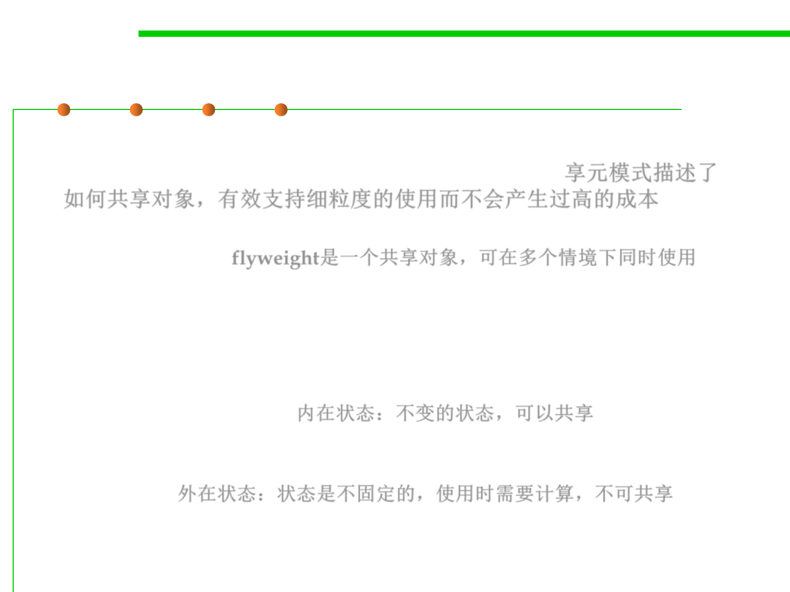

Flyweight Pattern
8.3 Code Tuning for Performance Optimization
▪ The Flyweight pattern describes how to share objects to allow their
use at fine granularities without prohibitive cost. 享元模式描述了
如何共享对象，有效支持细粒度的使用而不会产生过高的成本
– A flyweight is a shared object that can be used in multiple contexts
simultaneously. flyweight是一个共享对象，可在多个情境下同时使用
– Use sharing to support large numbers of fine-grained objects efficiently.
▪ In the flyweight pattern, there is the concept of Intrinsic and
Extrinsic state.
– Intrinsic states(内在状态) are things that are constant and are stored in the
memory, can be shared. 内在状态：不变的状态，可以共享
– Extrinsic states( 外在状态) are things that are not constant and need to be
calculated on the fly, and are therefore not stored in the memory, can not
be shared. 外在状态：状态是不固定的，使用时需要计算，不可共享
– E.g., in a game, the shapes of the aliens are all the same, but their color will
change based on how mad each are. The shapes of the aliens will be
Intrinsic, and the color of the alien will be Extrinsic.